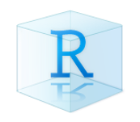
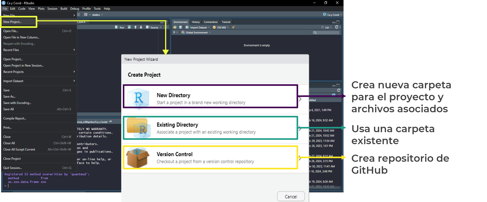
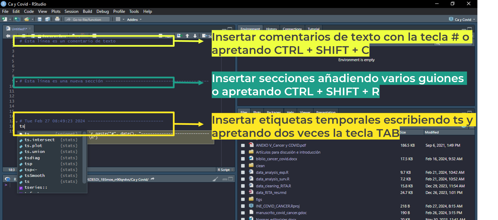
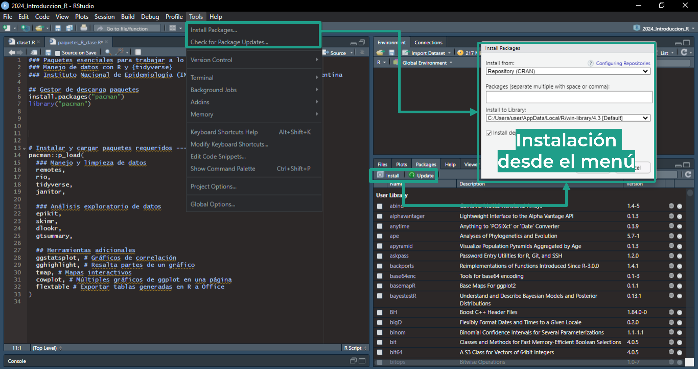

Este material es parte del curso Introducción a R tidyverse del Instituto Nacional de Epidemiología “Dr. Juan H. Jara” - ANLIS
Creado por Tamara Ricardo, licensed under CC BY-NC 4.0
Introducción
¿Qué es
¿Qué es
Componentes de
Proyectos de RStudio
Entornos de trabajo autocontenidos y portátiles
Contienen todos los archivos asociados a un proyecto individual (bases de datos, scripts, gráficos, etc.)
Pueden compartirse por correo electrónico, en la nube (Google Drive, Dropbox, One Drive, etc.) o GitHub
Se identifican con la extensión .Rproj y el ícono 
Pueden crearse desde:

Scripts de R
Archivos de texto plano que contienen una serie de comandos y funciones para ser ejecutados por R
Permiten organizar el flujo de trabajo
Son adaptables, reutilizables y pueden compartirse con otras personas
Los comandos y funciones son case sensitive (distinguen entre mayúsculas y minúsculas)
Se identifican con la extensión .R y el ícono
Documentación de scripts

Funciones
Comandos u órdenes elementales de R
Reciben una entrada, ejecutan un acción y devuelven un resultado
Cada función tiene un nombre específico seguido de paréntesis
Algunas funciones pueden recibir argumentos, dentro de los paréntesis y separados entre sí por comas
Para ejecutar una función o comando hay que posicionar el cursor sobre la línea correspondiente y apretar el botón RUN o las teclas CTRL + ENTER
Funciones simples
# Carga bases de datos de ejemplo data (iris)# Muestra el contenido de un objeto head (iris)
Sepal.Length Sepal.Width Petal.Length Petal.Width Species
1 5.1 3.5 1.4 0.2 setosa
2 4.9 3.0 1.4 0.2 setosa
3 4.7 3.2 1.3 0.2 setosa
4 4.6 3.1 1.5 0.2 setosa
5 5.0 3.6 1.4 0.2 setosa
6 5.4 3.9 1.7 0.4 setosa
# Media aritmética mean (iris$ Sepal.Length) # Concatena valores alfanuméricos c ("setosa" , "virginica" , 1 , 5 )
[1] "setosa" "virginica" "1" "5"
# Suma sum (iris$ Sepal.Length) # Gráficos sencillos con R base plot (iris$ Sepal.Length)
Funciones con argumentos
# Excluye filas si no cumplen cierta condición filter (.data = iris, Sepal.Length> 7 , .by = Species)
Sepal.Length Sepal.Width Petal.Length Petal.Width Species
1 7.1 3.0 5.9 2.1 virginica
2 7.6 3.0 6.6 2.1 virginica
3 7.3 2.9 6.3 1.8 virginica
4 7.2 3.6 6.1 2.5 virginica
5 7.7 3.8 6.7 2.2 virginica
6 7.7 2.6 6.9 2.3 virginica
7 7.7 2.8 6.7 2.0 virginica
8 7.2 3.2 6.0 1.8 virginica
9 7.2 3.0 5.8 1.6 virginica
10 7.4 2.8 6.1 1.9 virginica
11 7.9 3.8 6.4 2.0 virginica
12 7.7 3.0 6.1 2.3 virginica
# Condicional simple ifelse (iris$ Species== "virginica" , yes = "si" , no = "no" )
[1] "no" "no" "no" "no" "no" "no" "no" "no" "no" "no" "no" "no" "no" "no" "no"
[16] "no" "no" "no" "no" "no" "no" "no" "no" "no" "no" "no" "no" "no" "no" "no"
[31] "no" "no" "no" "no" "no" "no" "no" "no" "no" "no" "no" "no" "no" "no" "no"
[46] "no" "no" "no" "no" "no" "no" "no" "no" "no" "no" "no" "no" "no" "no" "no"
[61] "no" "no" "no" "no" "no" "no" "no" "no" "no" "no" "no" "no" "no" "no" "no"
[76] "no" "no" "no" "no" "no" "no" "no" "no" "no" "no" "no" "no" "no" "no" "no"
[91] "no" "no" "no" "no" "no" "no" "no" "no" "no" "no" "si" "si" "si" "si" "si"
[106] "si" "si" "si" "si" "si" "si" "si" "si" "si" "si" "si" "si" "si" "si" "si"
[121] "si" "si" "si" "si" "si" "si" "si" "si" "si" "si" "si" "si" "si" "si" "si"
[136] "si" "si" "si" "si" "si" "si" "si" "si" "si" "si" "si" "si" "si" "si" "si"
Paquetes de R
Conjuntos de funciones y documentación que se pueden instalar y/o compartir
Se pueden descargar directamente del repositorio de CRAN (Comprehensive R Archive Network) o de otras fuentes (Bioconductor, GitHub, etc.)
Suelen requerir la instalación de paquetes relacionados (dependencias)
Pueden activarse/desactivarse en cualquier momento
Instalación por comandos
install.packages ("pacman" )## Una vez instalado el paquete, debo cargarlo para que se pueda usar library ("pacman" )require ("pacman" )
Instalación con gestor de paquetes
## pacman (package manager) permite instalar y cargar varios paquetes en simultáneo :: p_load (tidyverse,
Instalación desde el menú

Objetos de R
Todo lo que se almacena en R: datos, variables, funciones, resultados, gráficos, tablas, etc.
Un objeto aparece en el Environment una vez que se le ha asignado un valor con el operador <- siguiendo la estructura: Objeto <- valor
### Crear un vector numérico <- iris$ Petal.Lengthclass (x)### Crear un factor <- factor (iris$ Species)class (fact)### Crear un data.frame <- data.frame (SP = iris$ Species,Petal = iris$ Petal.Length)class (iris_sp_petal)### Crear un tibble (tidyverse) <- dplyr:: tibble (length = iris$ Sepal.Length,width = iris$ Sepal.Width)class (iris_sepal)
[1] "tbl_df" "tbl" "data.frame"
### Crear una lista <- list (c ("setosa" , "virginica" ), # Vector de texto $ Petal.Width # Vector numérico con diferente nro de observaciones
Crear un vector numérico
x <- iris$Petal.Length
Si llamamos al objeto desde la consola, aparece su valor precedido de un [1] que es el índice del comienzo del objeto
Los tipos de objetos más comunes son:
Tipo Descripción
character()Textos, palabras, frases entre comillas
integer(), numeric(), complex()Números enteros, con decimales o complejos
logical()Los valores solo pueden ser TRUE o FALSE
Date06-03-2024, 6/3/24, 6 de marzo de 2024
Vectores c()
Secuencia de objetos singulares, todos del mismo tipo (character, integer, numeric, date, logical)
factor()Vectores con un orden determinado
data.frame() o tibble()Vectores de datos unidos (columnas) con el mismo número de observaciones (filas)
list()Colección ordenada de otros objetos (vectores, data.frames, etc.)
Operadores matemáticos
Operador/función Descripción Ejemplo
+Suma
-Resta
*Multiplicación
10*7
/División
^Potencia
%%Módulo
round(), floor(), ceiling()Redondeo
sqrt()Raíz cuadrada
log(), log10(), log2()Logaritmo
Operaciones estadísticas
Función Descripción Ejemplo
mean()Media aritmética
mean (c (1 , 6 , 22 , 10 , 45 , 0 ))
median()Mediana
median (c (1 , 6 , 22 , 10 , 45 , 0 ))
sd()Desvío estándar
sd (c (1 , 6 , 22 , 10 , 45 , 0 ))
quantile()Cuantiles o cuartiles
quantile (c (1 , 6 , 22 , 10 , 45 , 0 ))
sum()Suma
sum (c (1 , 6 , 22 , 10 , 45 , 0 ))
min()Mínimo
min (c (1 , 6 , 22 , 10 , 45 , 0 ))
max()Máximo
max (c (1 , 6 , 22 , 10 , 45 , 0 ))
range()Rango
range (c (1 , 6 , 22 , 10 , 45 , 0 ))
summary()Medidas resumen
summary (c (1 , 6 , 22 , 10 , 45 , 0 ))
Introducción a tidyverse
Utilidades de
Importar datos (Tema 1)
Dar un formato ordenado a los datos (Tema 2)
Transformar datos (Tema 2 y 5)
Generar gráficos y tablas (Temas 3-4)
Comunicar resultados (Tema 6)
Paquetes incluidos
# Carga tidyverse library (tidyverse)# Listado de paquetes tidyverse_packages ()
[1] "broom" "conflicted" "cli" "dbplyr"
[5] "dplyr" "dtplyr" "forcats" "ggplot2"
[9] "googledrive" "googlesheets4" "haven" "hms"
[13] "httr" "jsonlite" "lubridate" "magrittr"
[17] "modelr" "pillar" "purrr" "ragg"
[21] "readr" "readxl" "reprex" "rlang"
[25] "rstudioapi" "rvest" "stringr" "tibble"
[29] "tidyr" "xml2" "tidyverse"
Importación y exportación de datos
Importar datos en R base
## Bases de ejemplo de R # Se puede llamar directamente con el nombre de objeto data (iris) # o colocarlo entre comillas data ("mtcars" ) ## Bases ejemplo del curso # No lee correctamente la base <- read.csv ("clase_1/base_pacientes_ejemplo.csv" ) # Con este comando se soluciona <- read.csv2 ("clase_1/base_pacientes_ejemplo.csv" ) # O podemos usar read.delim si conozco que símbolo se usó como separador <- read.delim ("base_pacientes.csv" , sep = ";" ) # Si no asigno a objeto, solo me muestra la salida en la consola read.csv2 ("clase_1/base_pacientes_ejemplo.csv" )
Importar datos con tidyverse
### Paquete readr <- read_csv ("clase_1/base_pacientes_ejemplo.csv" )<- read_csv2 ("clase_1/base_pacientes_ejemplo.csv" )<- read_delim ("clase_1/base_pacientes_ejemplo.csv" )### Paquete readxl library (readxl) # Debo cargar este paquete antes de usarlo <- read_excel ("clase_1/base_excel_ejemplo.xlsx" ) # Lee archivos .xlsx y .xls <- read_xlsx ("clase_1/base_excel_ejemplo.xlsx" ) # Lee solo archivos .xlsx <- read_xls ("clase_1/base_excel_ejemplo.xlsx" ) # Lee solo archivos .xls ### Paquete gsheets4 para leer hojas de cálculo de Google library (googlesheets4) # Cargar el paquete antes de usarlo ## Busca hojas de cálculo de Google en Drive (requiere login) <- gs4_find ()## Carga primer hoja de cálculo de la lista <- googlesheets4:: read_sheet (ss = as.character (sheets$ id[1 ]))## Carga quinta hoja de cálculo de la lista $ id[5 ]# Puedo copiar el código como texto para que el paquete lo busque <- read_sheet (ss = "1dBnA0BvgASlGQtm5ooyYtlzYBzIqG7aRid9pepYAUY4" )
Importar datos con el paquete rio
Permite importar y exportar diferentes formatos de archivos (.txt, .csv, .xls, .xlsx, SAS, STATA, SPSS, EpiInfo, .json, etc.)
Cuando se proporciona una ruta, rio lee la extensión del archivo y habilita la herramienta correcta para su lectura o escritura
Si bien no es parte de tidyverse, por su flexibilidad lo usaremos a lo largo del curso para importar y exportar archivos
### Archivos csv <- import ("clase_1/base_pacientes_ejemplo.csv" )### Archivos de Excel <- import ("clase_1/base_excel_ejemplo.xlsx" )
Se puede usar en combinación con el paquete here que permite acortar la ruta de los archivos
install.packages ("here" )library (here)### Cargo csv ejemplo anterior <- import (here ("clase_1" , "base_pacientes_ejemplo.csv" ))
Exportar datos
Para la exportación de datos utilizaremos el paquete rio debido a que permite exportar a diversos formatos con un mismo comando:
## Exporta a csv export (iris_sp_petal, "iris_sp_petal.csv" )## Exporta a Excel export (sheets, "sheets_drive.xlsx" )
 ?
? ?
?